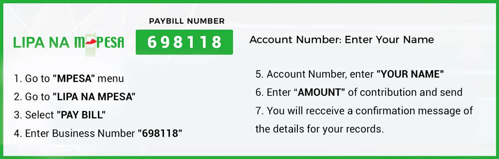

Support Ukweli's Political Program
Join the movement
Join Ukweli Party now and help us achieve our political program with and for all Kenyans. Here is how you can help us win.
Become a member of Ukweli
To become a member of Ukweli Party, see the membership guide on our Structure page. Dial *509# or use ippms.orpp.or.ke.
Donate
We need financial resources to run the activities of the Party and movement such as pay office rent, retain Secretariat staff, organize public outreach and education events, publish and distribute Party information resources, maintain our website, train our leadership teams and so on.

Volunteer
You can volunteer your time and skills to help us succeed. We need the support of community organizers, membership recruiters, campaigners, civic educators, lawyers, communication experts, researchers, writers, resource mobilization experts, graphic designers, songwriters and musicians, artists, etc. to help us grow the movement and advance our political program. Please fill the form below and we will contact you.
Be Ukweli
Establish an Ukweli Chapter in your area. Here is how to go about it:
- Work with other members to grow the Ukweli Party and Movement branch in your County
- Raise awareness about the Charter of Ukweli and our governance and political program for Kenya
- Fundraise for Ukweli
- Campaign for our candidates
Run for office
To succeed in our governance and political program, we need competent Kenyans of integrity to run for political office. All our members in good standing and subject to the Party nomination processes have a right to run for office as Ukweli Party candidates for any seat in Kenya's general or by-elections. In selecting our candidates for elections, Ukweli Party's nomination procedures are guided by The Elections Act and other rules as published by the Independent Electoral and Boundaries Commission (IEBC).